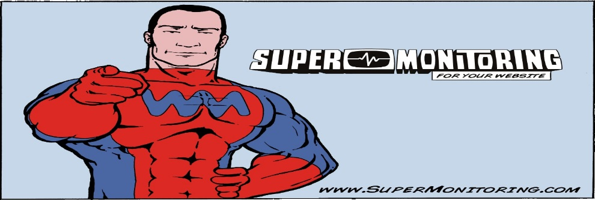
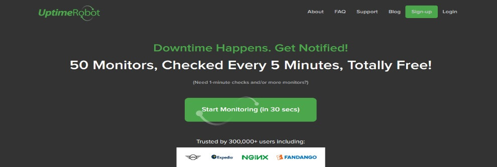

Monitoreo Web
Cuando hablamos de monitoreo web muchas personas suelen decir ¿Pero qué es eso?, ¿De qué rayos estáis hablándome?, entre muchas otra interrogantes... El monitoreo web es servicio de disponibilidad que tiene nuestra página web en internet. En ocasiones los usuarios tratan de acceder a nuestra paginas y no pueden debido a que se encuentra fuera de servicio por diversos factores, desde que el servicio de hosting no funciona correctamente hasta fallos en el dominio, entre muchos otros que pueden suceder.
Existe el llamado “Monitoreo web” que nos permite estar al tanto de que día y a qué hora nuestra página web no estuvo disponible, gracias a esto podemos evitar que nuestros usuarios decidan irse porque la pagina no estuvo disponible.
Ustedes se preguntaran ¿Cómo podemos saber esto?, ¿Cómo es esto posible?, actualmente existen diversas paginas que nos permiten de forma gratuita y de forma paga monitorear nuestra página web y mediante mensaje al correo o mensaje de texto mantenernos informados acerca de estos fallos. A continuación vamos a mostrar algunas de estas páginas que nos permite realizar dicho proceso.
Las páginas nombradas a continuación serán enumeradas por nuestras experiencias y uso en cada uno de ellas, es posible que existan otras paginas relacionadas al monitoreo web.
Super Monitoring.
Esta página nos ofrece un gran servicio de móreo, tiene un servicio gratis de 15 días de prueba y un servicio pago durante un año. Super Monitoring nos avisa mediante mensaje al correo o al teléfono cuando nuestra página no está disponible, también podemos configurar para que supervise nuestra página cada minuto, esta página ofrece muchas funciones muy útiles, cuenta con un sistema capacitado y preciso a cada instante posee versiones en idioma español e ingles.

Uptime Robot.
A diferencia de las demás páginas esta es una de las pocas páginas que ofrece servicio gratuito y no defrauda a los usuarios, esta página cuenta con un sistema de monitoreo cada 5 minutos a diferencia de las demás, Uptime Robot nos permite ver cuando tiempo estuvo inactiva nuestra página web, cuenta con un sistema de estadísticas y muchas otras funciones para el monitoreo además el hecho de ser totalmente gratis y completa lo dice todo.

Monitis: Network & IT Systems Monitoring.
Esta página nos brinda un excelente monitoreo de páginas web y muy completo a su vez, ofrece un sistema de monitoreo gratuito por 15 días y plan de pago, a diferencia de las demás ella ofrece un servicio de monitoreo donde nos indica en que países exactamente no está disponible nuestra página y a que día y hora estuvo inactiva, cuenta con diversas funciones como sistema de alarma por correo y mensaje, estadísticas y mucho mas. Si de verdad queremos sacar el máximo provecho a Monitis: Network & IT Systems Monitoring debemos pagar por dicho servicio ya que su sistema gratuito deja mucho que desear.
Además de estas tres páginas existen muchas otras que también pueden proporcionar un sistema de calidad y de buen rendimiento. Estas han sido nombradas porque fueron probadas durante un periodo de tiempo y cumplen con grandes expectativas.